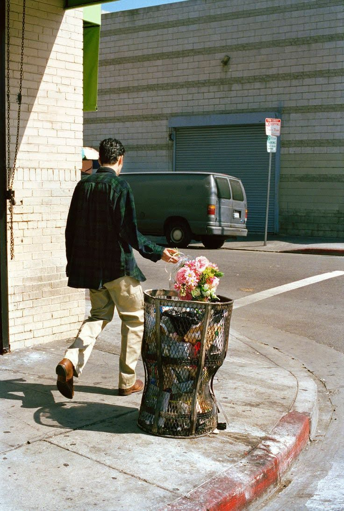

Đã từng quen
Thực sự thì cũng không biết nên kể từ đâu nữa nhỉ. Đây có thể coi là một người bạn, thật ra cũng chẳng phải bạn, chỉ có t coi người đó là bạn nhưng người đó thì không.
Có thể t đã dành hết mọi sự tôn trọng và nhẫn nhịn để cố gắng nhìn nhận sâu thẳm trong con người họ, nhưng t cũng nghĩ là bản thân mình còn quá nhỏ, còn quá ít trải nghiệm
để có thể nhìn nhận hiểu thấu một người. Phải chăng những gì họ thể hiện cũng chỉ là một phần, mọi sự khiến t nhầm tưởng, dù sao thì t cũng chưa từng phải hối hận với bất kì cách hành
xử nào của mình. Điều t thực sự buồn là t đã cố gắng coi họ như một người bạn thực sự, cố gắng đồng cảm. Và điều khiến t ngạc nhiên ở đây là thực sự t có thể cảm thấy thân quen nhanh một cách thần kì như vậy
. Có nhiều chuyện khiến t phải giật mình ngạc nhiên. T không phải là một người thích tiếp xúc với nhiều người, càng là đứa không thích những liên quan thiếu cần thiết, vậy mà t lại có thể đi ngược lại với ban thân như vậy.
Cũng có phá vỡ quy tắc bản thân đề ra suốt một thời gian dài, điều này cũng khiến t ngạc nhiên, dù t biết rằng ai rồi cũng phải thay đổi thôi. T cũng chưa từng nói dối gì cả, t cũng không giấu gì. Mọi chuyện khi t nói đều có phần trăm là đúng.
Có thể còn nhiều hiểu nhầm chăng. Thật sự trong đầu t là một đống suy nghĩ hồn độn đang dồn lại. T cũng không hiểu sao mọi chuyện lại như thế, là lỗi của t hay là của ai. T càng không hiểu mọi chuyện lại đi xa như thế. Điều luôn làm t lo sợ là mỗi khi t
có thể tưởng rằng đã chạm đến gần, thì mọi chuyện lại lạnh nhạt đến vậy, đúng là xấu tính phải không. Hi vọng mình có thể không care nữa, rằng như nào thì cũng là chuyện riêng của mỗi người rồi. Chẳng cần bận tâm như vậy, dù cs của họ có như nào đi chăng nữa,
hi vọng họ có thể dũng cảm đi tiếp, có xấu tính hay thích làm điều tồi tệ đi nữa thì cũng nên nhớ đừng làm ảnh hưởng đến ai. Mình vẫn nhớ như in cái câu nói của người đó: "Chưa nghe Đen Vâu bảo à, có người đến có người đi có người ở lại". T thực sự là một
đứa rất ngang ngược và chẳng chịu thua, nhưng riêng một số chuyện t tính nguyện thua luôn vì có giữ cũng chẳng để làm gì. Vì nếu đã không muốn liên quan thì t cũng xin tôn trọng quyết định của họ. T không giận cũng không ghét vì họ cũng chưa từng làm tổn thương t dù một chút.
T chỉ buồn vì khi t nghĩ rằng t đã có thể sắp tìm được một người mà t có thể thoải mái nói ra những điều không vui, chuyện này chuyện kia. Nhưng kết quả sẽ là vẫn như bao lần mà thôi. Dù sao thì cũng cảm ơn vì đã đến và thay đổi một số tính xấu của t. Thank u.